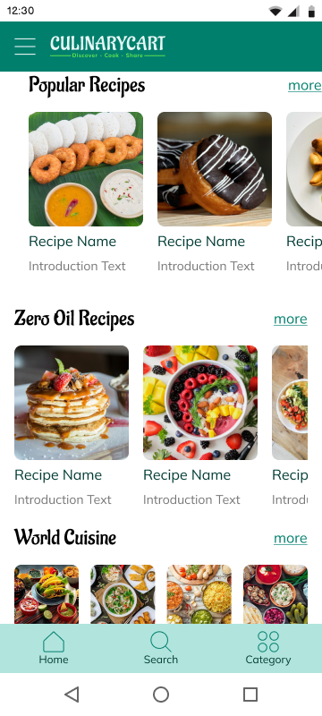
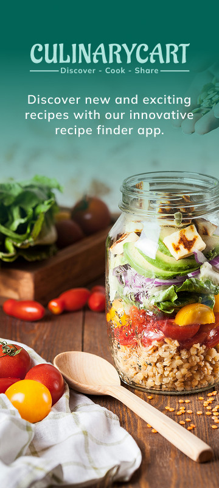
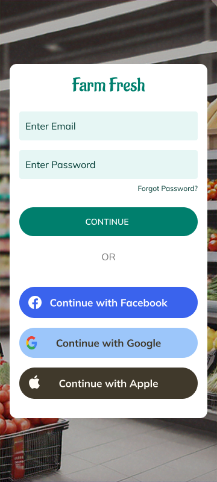
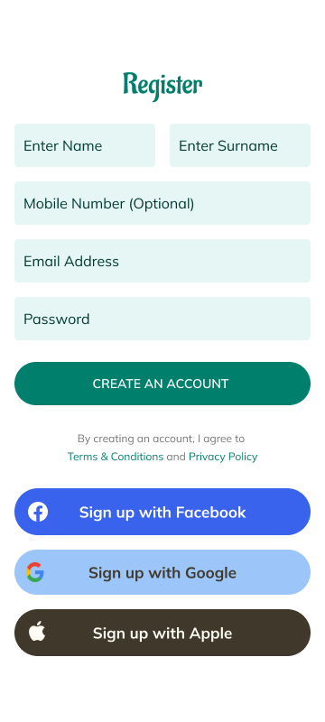
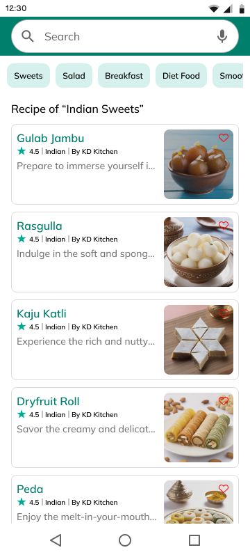
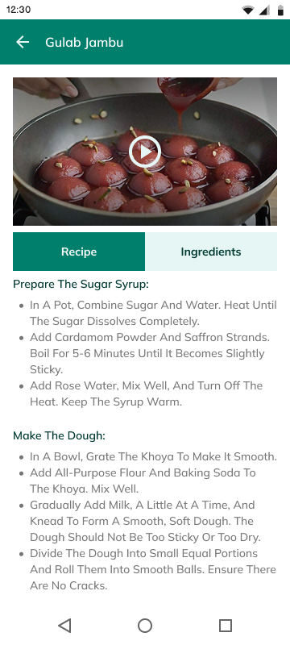
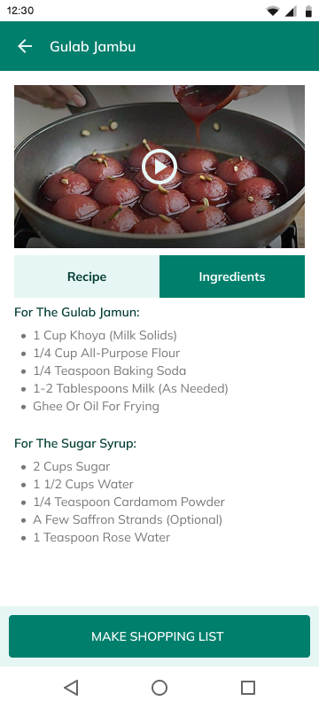
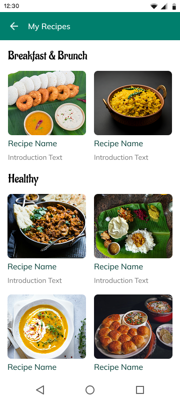
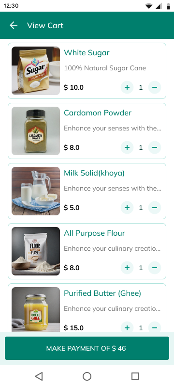

CulinaryCart is a mobile-first app designed to make cooking more accessible and enjoyable — helping users explore recipes, convert ingredients into shopping lists, shop via integrated platforms, and share their culinary experiences.


Cooking a new dish should be exciting — not frustrating. But users often juggle between recipe blogs, grocery apps, and handwritten notes just to cook one dish.
CulinaryCart was envisioned as a unified platform that brings together recipe discovery, ingredient planning, grocery shopping, and social sharing.
CulinaryCart is designed for a broad range of users, each with their own culinary goals — from efficiency to expression.
Needs healthy, family-friendly meals she can plan and shop for quickly.
Enjoys experimenting with trending recipes, often cooks for friends.
Wants to showcase her recipes, build a community, and get feedback.
Need step-by-step recipes and guidance with ingredient availability.
"The app aims to reduce effort, boost creativity, and build community around cooking."
Keshvi recently moved to Pune for a new job and lives independently. She has a keen interest in clean eating and enjoys cooking as a way to relax after work. Between long work hours and weekend meetups with friends, she looks for convenience without compromising on quality.
Name: Keshvi Prabhakar
Age: 27
Occupation: Marketing Specialist
Location: Pune, India
The flows were mapped so recipe discovery, shopping, and profile management could each stand on their own — while still connecting into one seamless checkout journey.
Smart filters (cuisine, prep time, diet) and search.
Clear instructions with ingredients & an auto-generated shopping list.
Export the list to Amazon Fresh, BigBasket, and more.
Auto-selects available brands — fully customizable.
Like, rate, comment, and upload recipes.







CulinaryCart reimagines the everyday cooking experience by connecting discovery with execution — in one intuitive platform. From uncovering the perfect recipe to sourcing ingredients and sharing the joy, every step was designed with empathy and ease in mind.
While this concept is still in the design phase, it has laid the groundwork for a unified culinary journey that balances user delight, utility, and innovation. This project was not just about building an app — it was about understanding habits, solving everyday frictions, and designing a seamless food experience people can truly enjoy.